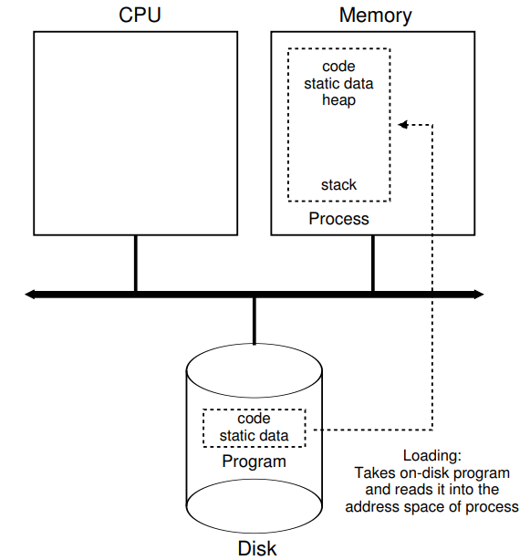
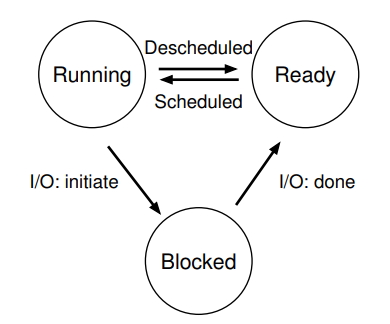

Abstraction: The process
Contents
Abstraction: The process#
teaching: 0 exercises: 0 questions:
“What is a program and what is a process?” objectives:
“Understand the differences between a program and a process.”
“Know the possible states of a process.” keypoints:
“A program is a static list of commands. When OS executes (runs) a program, the entire running operation is called a process.”
What is a program?#
A program is a static list of intsructions and data.
When a program runs, the OS takes this list and asks the CPU to execute them.
If we only have one CPU, how can we run more than one program at a time.
> ## What is a process?
>
> - A process is a **running program**.
> - But the program itself is not running ...
> - A process is an **abstraction** provided by the OS to describe the running of a program.
> - What is a process made of?
> - Memory that the process (running program) can address.
> - Memory registers.
> - Program counter.
> - Stack pointer.
> - Frame pointer.
> - I/O devices.
Process API#
The operating system provides an API to help managing processes. Minimally, the followings are provided:
Create: an OS must have some methods to create new processes to run programs.
Destroy: interface to destroy process forcefully.
Wait: temporarily pausing the process.
Miscellaneous Control: suspend and resume processes.
Status: provide status about the state of the process.
Program counter.
Stack pointer.
Frame pointer.
I/O devices.
> ## Process creation
>
> When a program is run, the OS performs the following steps:
> - Load a program's code and static data into memory (the virtual address space
> of the process).
> - Allocate memory for run-time stack (for stack).
> - Allocate memory for heap (used for dynamic memory allocation via `malloc` family).
> - Initialization:
> - File descriptor for standard input.
> - File descriptor for standard output.
> - File descriptor for error.
> - *In Linux, everything is a file.*
> - Begin executing from **main()**.
Loading: from program to process#

> ## Process states
>
> A process can be in one of the three states.
> - Running: the CPU is executing a process' instructions.
> - Ready: the process is ready to run, but the OS is not running
> the process at the moment.
> - Blocked: the process has to perform some operation (e.g., I/O request
> to disk) that makes it not ready to run.
Process: state transition#

> ## Process: state transition
>
> - When a process moves from **ready** to **running**, this means
> that it has been **scheduled** by the OS.
> - When a process is moved from **running** to **ready**, this means
> that it has been descheduled by the OS.
> - When an I/O request (within the process) is initiated, the **running**
> process become **blocked** by the OS until the I/O request is completed.
> Upon receiving the I/O completion signal, the OS moves the process' state
> from **blocked** to **ready**, to wait to be scheduled by the OS.
>
> <img src="../assets/figure/process/03.png" alt="Process state transition example" style="height:500px">
Process: data structure#
The OS is a program, and will data structures to track different pieces of information. that it has been scheduled by the OS.
How does the OS track the status of processes?
process list for all processes.
additional information for running process.
status of blocked process. from blocked to ready, to wait to be scheduled by the OS.
> ## Example: xv6
>
> - Educational OS developed and maintained by MIT since 2006.
> - [xv6 Git repository](https://github.com/mit-pdos/xv6-public)
> - [Register contexts and status definition for a process][xv6_process]
Example: Linux#
[Task struct in Linux][linux_task_struct]: Lines 631-1329
[Register contexts defined for each process][linux_x86_tss]: Line 267-312
[x86 CPU architecture model][https://en.wikibooks.org/wiki/X86_Assembly/X86_Architecture]
{% include links.md %}